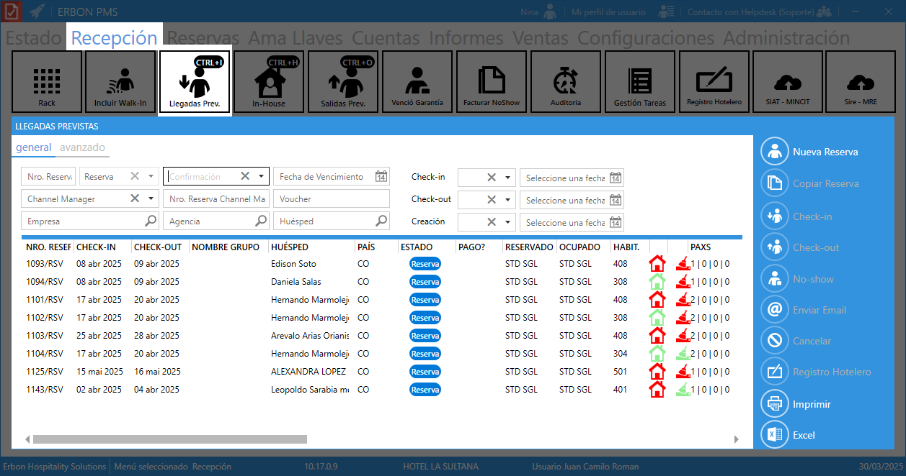
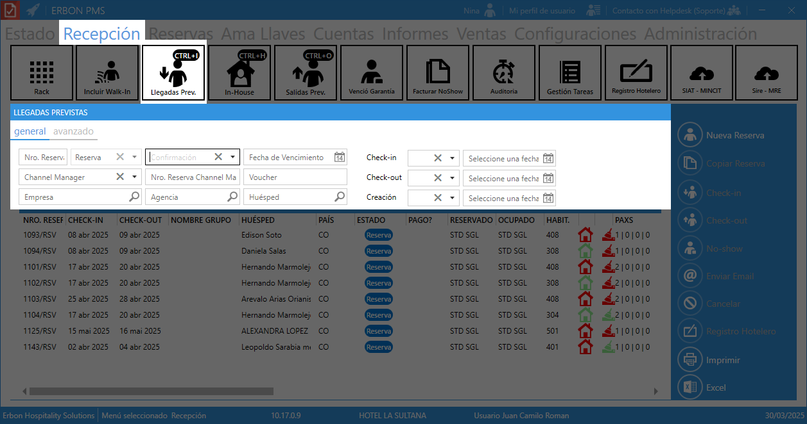
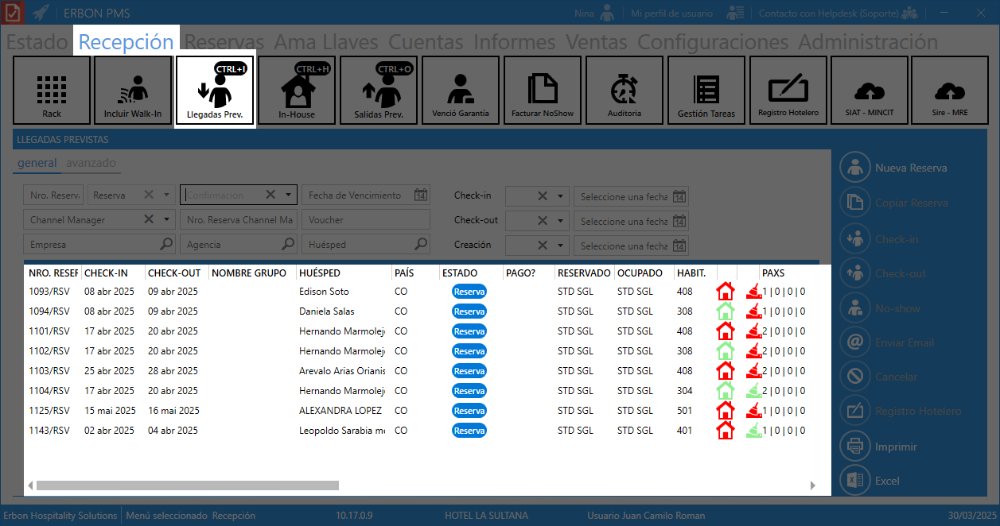
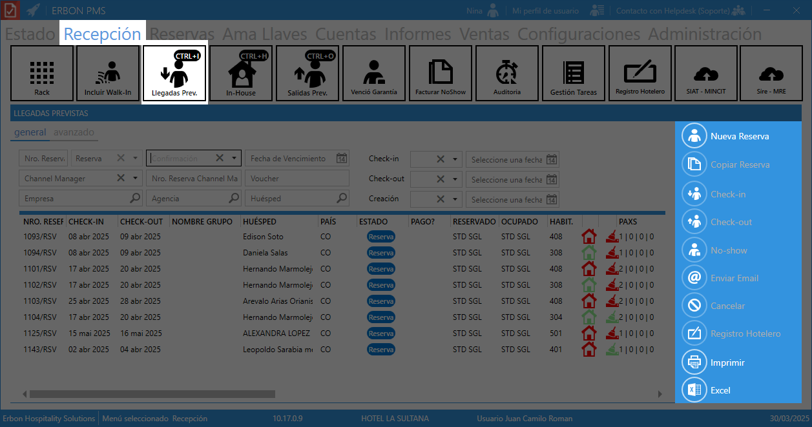

Llegadas previstas¶
El panel Llegadas Previstas es una herramienta que permite visualizar y administrar las reservas de huéspedes que tienen programado su check-in en una fecha específica. A continuación, se explica cada sección y su funcionalidad:

Consejo
Mantén presionado CTRL + i para ingresar rápido al panel Llegadas Previstas.
Sección de filtros¶
Permite buscar y filtrar reservas con diferentes criterios:

| Filtro | Funcionalidad |
|---|---|
| Nro. Reserva | Buscar una reserva específica por su número único. |
| Reserva / Confirmación / Fecha de Vencimiento | Filtrar reservas por estado, confirmación o fecha límite. |
| Channel Manager / Nro. Reserva Channel Manager / Voucher | Relacionado con plataformas de distribución de reservas en línea. |
| Empresa / Agencia | Filtrar reservas asociadas a empresas o agencias de viaje. |
| Huésped | Buscar por el nombre del huésped. |
| Check-in / Check-out / Creación | Filtrar por fechas de entrada, salida o de creación de la reserva. |
Tabla de reservas¶
Lista las reservas próximas con la siguiente información:

| Campo | Descripción |
|---|---|
| NRO. RESEF | Número único de reserva (ej. "1093/RSV"). |
| CHECK-IN | Fecha de llegada del huésped. |
| CHECK-OUT | Fecha de salida del huésped. |
| NOMBRE GRUPO | Nombre del grupo (si es una reserva grupal). |
| HUSPED | Nombre del huésped principal de la reserva. |
| PAS | Nacionalidad del huésped. |
| ESTADO | Estado de la reserva (ej. "Reserva" en color azul). |
| PAGO? | Indica si la reserva ya fue pagada. |
| RESERVADO | Tipo de habitación reservada (ej. "STD SGL" para estándar individual). |
| OCUPADO | Tipo de habitación que realmente ocupará el huésped. |
| HABIT. | Número de habitación asignada. |
| PAXS | Número de personas en la habitación (adultos, niños, infantes, etc.). |
| WALK-IN | Indica si la reserva es sin previa reserva. |
| Nº EXTERNO | Número de referencia externo de la reserva. |
| PENSIN | Tipo de plan de alimentación asignado (ej. "AD" - Alojamiento y desayuno). |
| EMPRESA / AGENCIA | Muestra si la reserva está asociada con una empresa o agencia de viajes. |
| ADR | Tarifa promedio diaria asignada a la reserva. |
| TOTAL / TOTAL CON IMPUESTOS | Costos totales de la reserva con y sin impuestos. |
| TARIFA | Nombre de la tarifa aplicada (ej. "Standard Rate", "Tarifa Exenta"). |
| CREADA POR | Usuario que generó la tarifa. |
| CREADA EL (FECHA REAL / FECHA SISTEMA) | Muestra la fecha exacta en que se registró la tarifa en el sistema. |
conos de casa verde/roja:
- ♀锔 Casa verde: Habitación disponible y lista para check-in.
- ♀锔 Casa roja: Habitación ocupada o no lista para recibir al huésped.
Menú de acciones¶
Opciones rápidas para gestionar reservas:

| Botón | Funcionalidad |
|---|---|
| Nueva Reserva | Crear una nueva reserva. |
| Copiar Reserva | Duplicar una reserva existente. |
| Check-in | Registrar la llegada del huésped. |
| Check-out | Registrar la salida del huésped. |
| No-show | Marcar reserva como "No-show" si el huésped no se presenta. |
| Enviar Email | Enviar correo al huésped o agencia. |
| Cancelar | Anular la reserva. |
| Registro Hotelero | Generar documento oficial de check-in. |
| Imprimir | Imprimir el listado de llegadas. |
| Excel | Exportar la lista a un archivo de Excel. |
Beneficios del panel de llegadas previstas¶
- Facilita la gestión del check-in y check-out.
- Permite visualizar el estado de las habitaciones en tiempo real.
- Mejora la planificación del equipo de recepción y limpieza.
- Optimiza la comunicación con huéspedes y agencias.